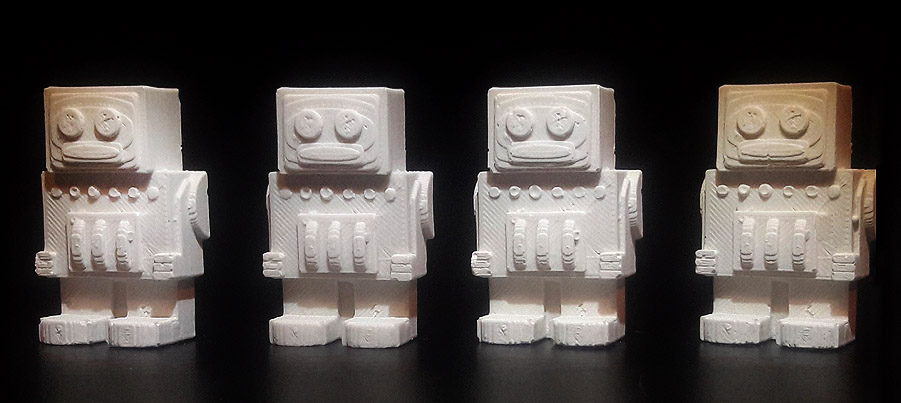

A6: Molding and casting

Write up of process: 3D print of mold
- I enjoy modeling so I wanted to make my own design
- Created a fun retro-robot model in Rhino
- Created "mold for the mold model" in Rhino too
- Exported the robot + mold design as an .STL file
- Imported the .STL file into XYZ printing for DaVinchi 3D printer
- Printed the part successfully

Write up of process: Creation of mold and casting
- Set 3D printed "mold of the mold" part on table
- Determined amount of mold liquid needed for part by filling with water first. Noted the volume needed
- Dumped water out of mold into plastic cup. It filled the cup about half way. Took note
- Prepared Smooth-On Oomoo 30
- Mixed 1:1 ratio of Part A and Part B in plastic cup. Took into consideration the volume revealed by the water test and the fact that about 20% of the silicone will be adhere to the cup sides
- Mixed Part A and Part B for 30 seconds
- Pured silicone mixture into 3D printed mold
- Let sit for 6 hours to cure, per the directions
- Mixed Cast plaster. 3 parts Cast, 1 part water
- Poured Cast plaster mixture into 30 silicone mold
- Let Cast plaster mixture set for 1 hour
- Removed my lil' robot from the mold
- Repeated Cast plaster mixture and mold process x4
Problems in project and how I resolved them
- I stirred the Cast mixture too vigorously and caused many small bubbles that showed up in my 1st cast
- I Learned to tap the cast mix while still liquid to surface the bubbles before pouring into the mold
- As a result, later casts had far less small pits in the cast surface
- I also learned that I bought one bad to many for the Cast material - a tough lesson in measuring your resources!
- As a result,my second mill had no gaps
Source files
- Rhino robot file
- Download source file
- Rhino mold file
- Download source file
- .stl file
- Download source file
Peer-attribution
- Special thanks to @Emma Meersman, who showed me how she made the mold in Rhino during class!